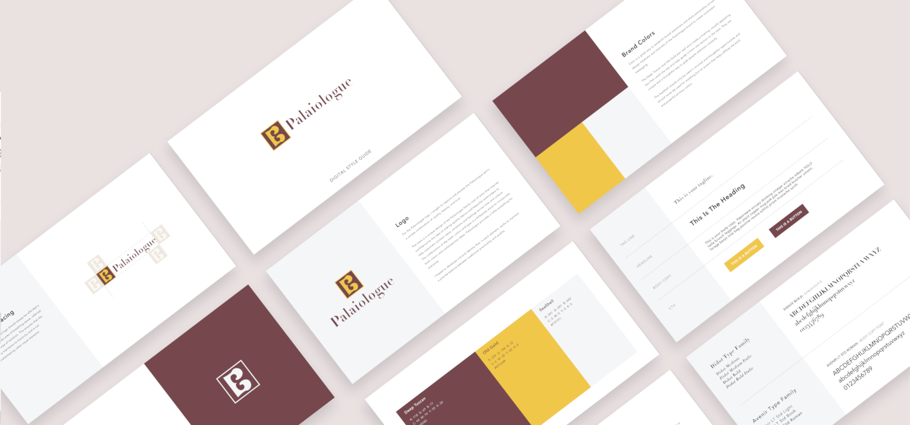
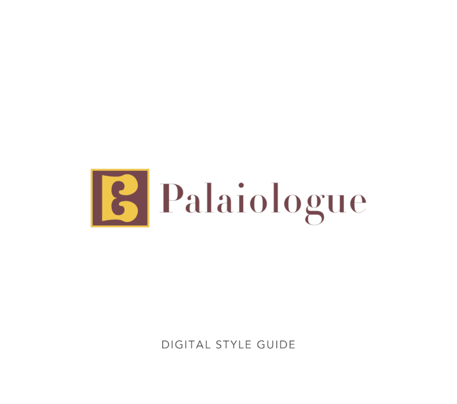
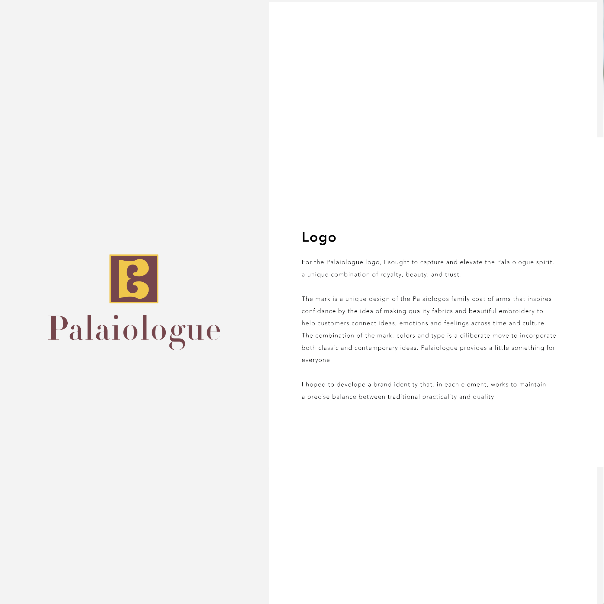
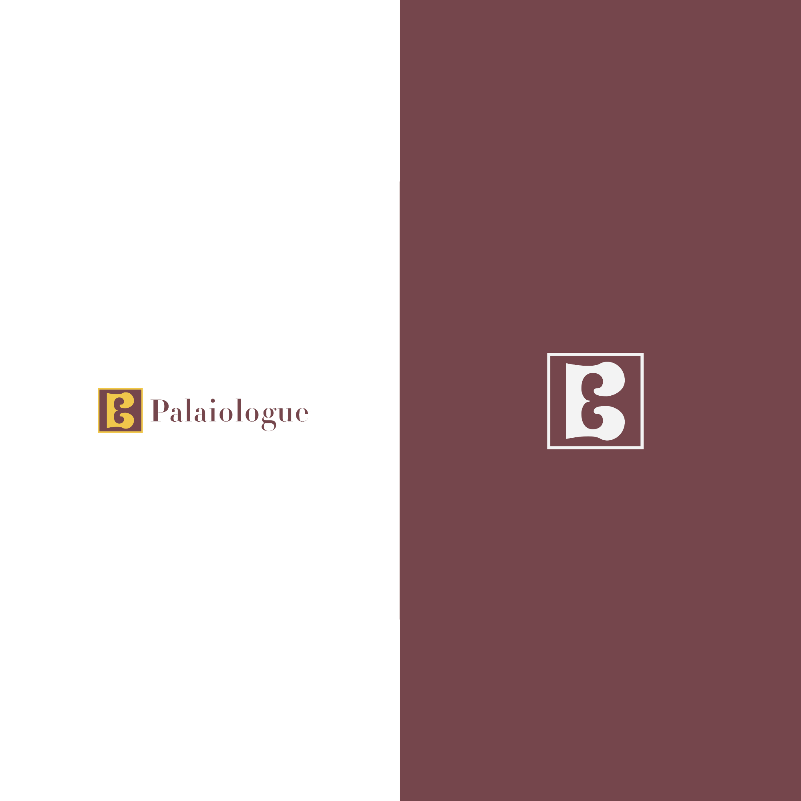
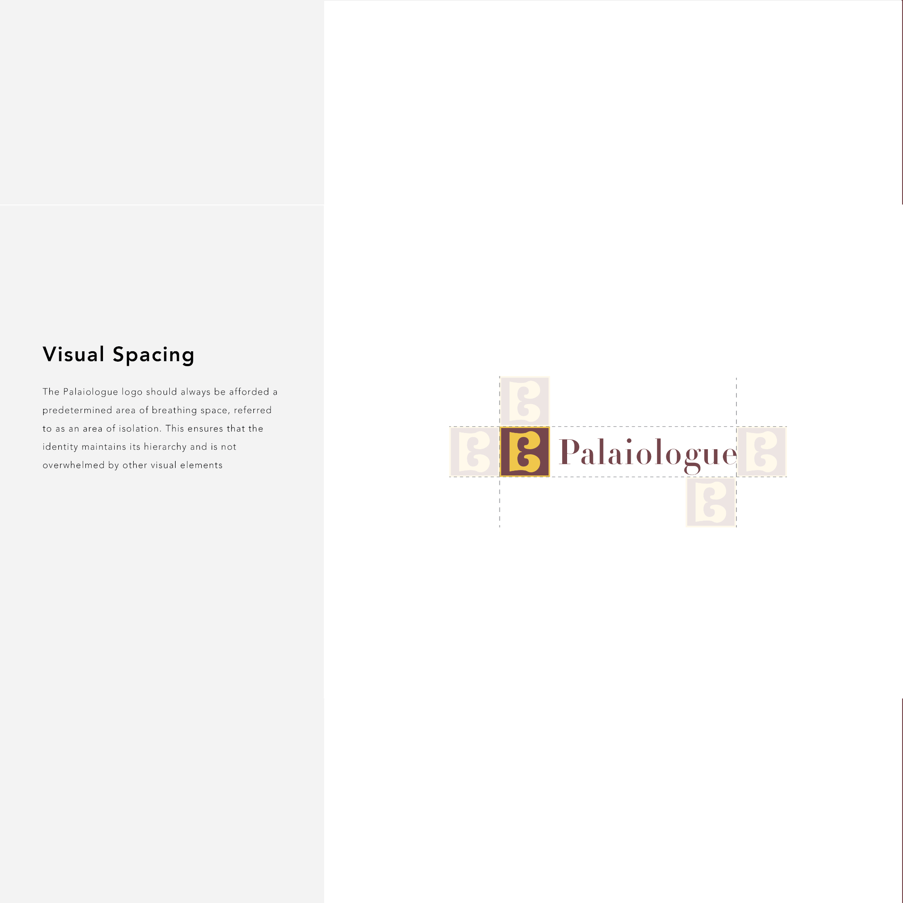
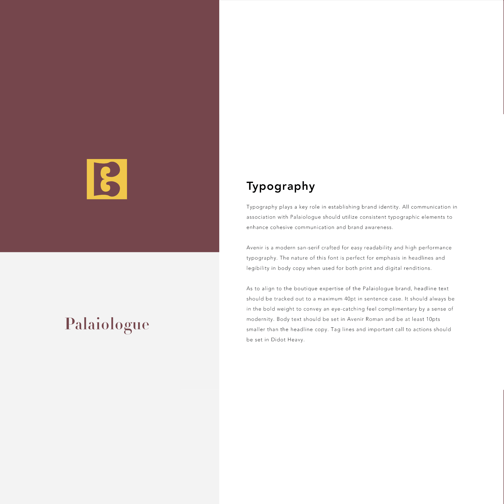

Palaiologue crafts timeless, high-quality womenswear that draws on traditional Greek patterns and aesthetics, reimagined for a modern audience.
The project included brand identity, styleguide creation, lifestyle photography, and print collateral.





Development of a comprehensive visual identity system establishing logo structure, typographic hierarchy, and core brand elements.
The styleguide defined visual consistency across applications, ensuring clarity, cohesion, and long-term brand scalability.
Context-driven imagery positioning the product within daily environments.
The goal was to connect product utility with lived experience and audience relevance.


A structured typographic system built for clarity and campaign consistency.
Hierarchy and spacing were refined for use across digital advertising, landing pages, and promotional materials.


The campaign launched the product with cohesive visual direction and immediate recognition.
Strategic alignment across imagery and typography supported brand positioning and market entry.